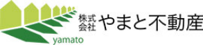

01 ── 原本PNG と SVG清書
原本PNG（拡大するとボケる）
SVG清書（何倍でも鮮明）
原本＝現サイトのheader_logo.png（293×65px）。マークをピクセル解析でトレースし、ベクター化しました。
ロゴタイプ（社名）はサイト標準の秀英角ゴ銀で組み直しています。原本の書体と異なるため、採用前に専務確認をおすすめします。

株式会社やまと不動産
株式会社やまと不動産
株式会社やまと不動産
株式会社やまと不動産
株式会社やまと不動産
来場のご予約
株式会社やまと不動産
来場のご予約
上＝白地ヘッダー（company/contact等）／下＝透過ヘッダー（index/kodawari等の写真上）。マークの緑とライムは暗地でもそのまま映えるため、白抜き版を作らなくても成立します。